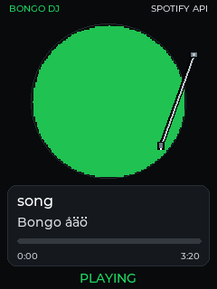
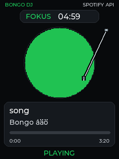
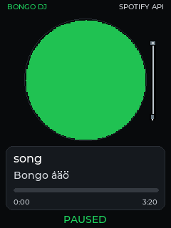
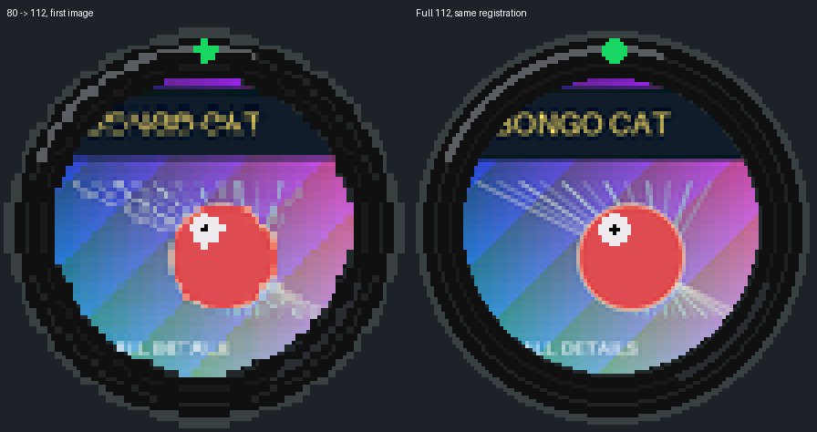

same-cover


focus-refinement


paused-refinement

SIMULERING, INTE FYSISK TIDMÄTNING. Faktiska sender-paket spelas genom verklig C++-parser/CRC/slots/SHOWN/state/render. Kompakt först; full112 från samma cache efter vald slot. Atomisk skärpning utan ny tass eller ny storlek. Fulltransportens 4,68s bygger på tidigare C2-observation, inte mätning av denna kandidat.



